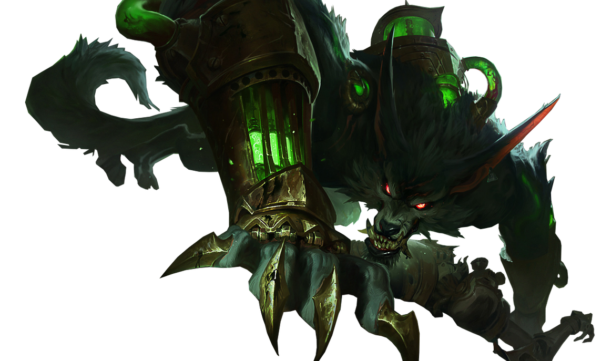
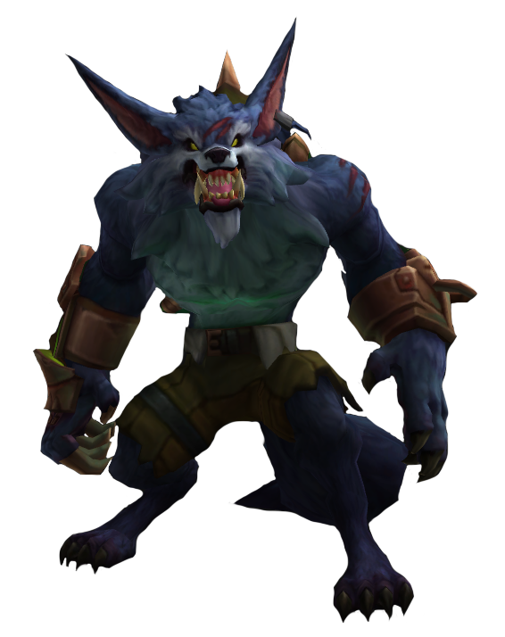
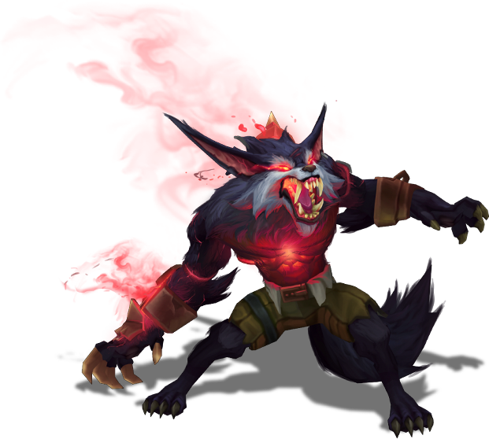

Home
Sobre Warwick
Clique para saber tudo sobre o Warwick
As Correntes se quebraram,
A CRIATURA ESTA LIVRE !!

El lobo siempre cuida a su loba, AUUUUUUUUUUUUUUUU
Acesse para saber mais:
 Sobre Warwick
 Warwick Build